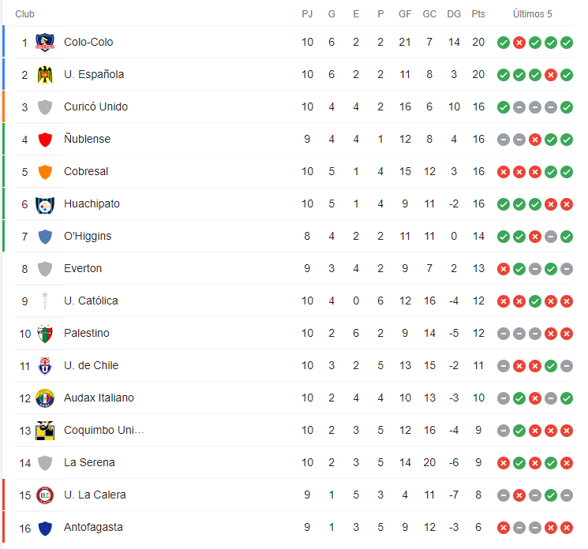

Colo Colo derrotó a Cobresal y sigue en la punta: Conoce cómo está la tabla de posiciones
La tarde de este domingo, el cuadro de Colo Colo derrotó a Cobresal por dos goles a uno, lo que le permite alcanzar los 20 puntos en el torneo y seguir como líder en la tabla de posiciones.
Colo Colo abrió el marcador en el minuto 14. Córner servido por Leonardo Gil, Esteban Pavez pivoteó la pelota y en la boca del arco, apareció Emiliano Amor para empujar la pelota.

El cuadro minero no bajó los brazos y tras un error en la salida de Braya Cortés, Guillermo Pacheco asistió a Alejandro Camargo (26'), que llegó a empujar el esférico cerca del área chica. Sin embargo, solo dos minutos más tarde (28'), Amor habilitó a Pablo Solari, quien se adentró en el área, engancho y de derecha volvió a poner por delante a su equipo. Sentenciando el partido a su marcador final 2-1.